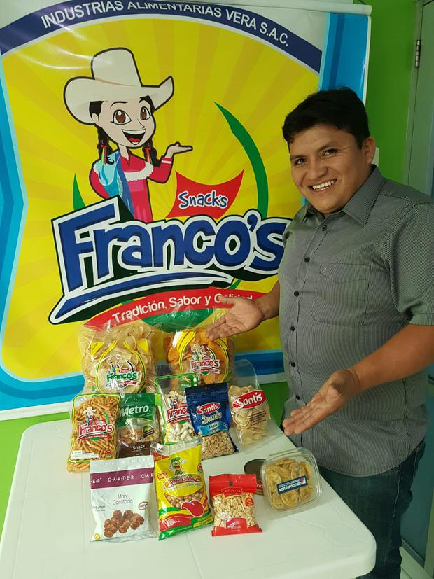
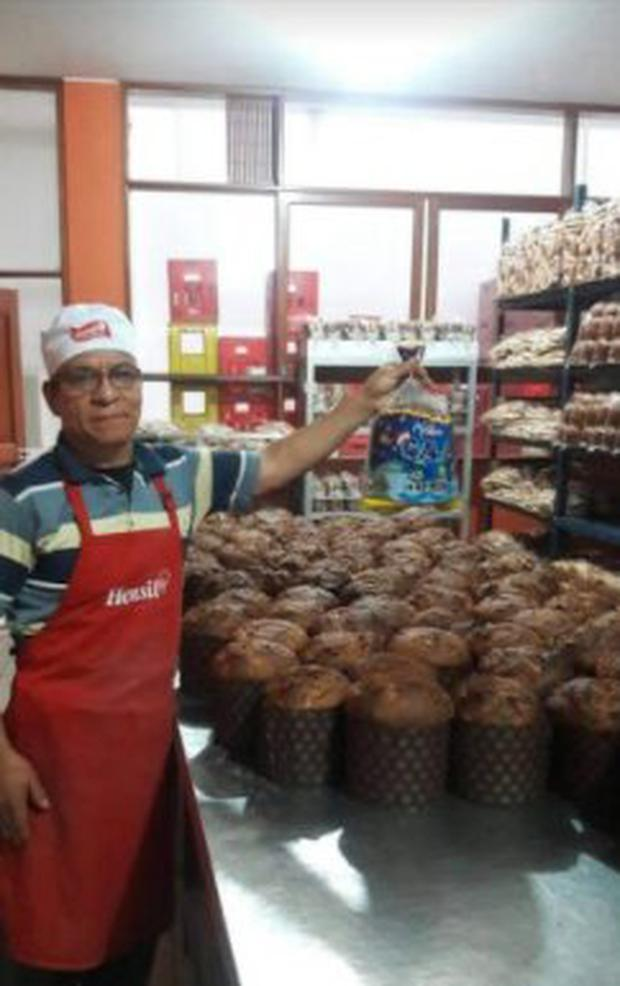

Target Audience
Our audience will be the bussiness pepole that lives near the area of Lima, people who have bussinesses and are loking for new strategic partners in order to grow their brands.However, any proffesional that is looking for making connections are well received in this community there will be all the branches in proffessional carreers. The age of the target audience will range from 18 years old up to 70 years old. The audience is a group of people, most of them proffessionals, that have the same interests and motivations in developing new connections with bussinesses an development of the community.
Personas
Franco Vera
- Occupation:CEO of his company that produces salad and sweet snaks.
- Demographics and education: 45 years old. has a degree in industrial engeneer.
- Goal and motivations for using the site: connect with strategical partners to develop bussiness.
- Social: Very active individual, likes to help people from his community.
- Environment:He is comfortable using a computer and refers to himself as an intermediate Internet user.
Saturnino Cardozo
- Occupation:CEO of his company thta is a bakery.
- Demographics and education: 55 years old. has no degree but he knows the industry very well.
- Goal and motivations for using the site: connect with strategical partners to develop bussiness in new markets.
- Social: Very active individual, likes to help people from his community.
- Environment:He is not comfortable using a computer and prefers to use the mobile phone
Scenarios
Scenario 1:How can I connect with other people?
- There will be weekly meetings in order to talk about bussiness topics
- There will be groups to join and interact with each other
Scenario 2:How my community can improve life quality
- there will be workshops for members in order to increase people knoledge and starting to create new jobs.
- people can associate to do investments in their communities by creating new services for leisure time.
Scenario 3:How can I get economic growth?
- There will be projects for investments based on community necesities and that can be a good opportuunity to grow economically.
- new markets can be open outside the region.
Scenario 4:Do I have to pay membership?
- You can contribute to chamber of commerce in a voluntary way since the chamber generates their own profits by generating bussinesses.
- Members who start new bussiness within the chamber will pay a percentage from profits for the first year.
Scenario 4:Do I have to pay membership?
- You can contribute to chamber of commerce in a voluntary way since the chamber generates their own profits by generating bussinesses.
- Members who start new bussiness within the chamber will pay a percentage from profits for the first year.
Scenario 5:Are there legal consequences involved
- the chamber of commerce has its staff of layers that take care of every legal procedure.
- You can have a meeting with the layers for getting information about any legal process.